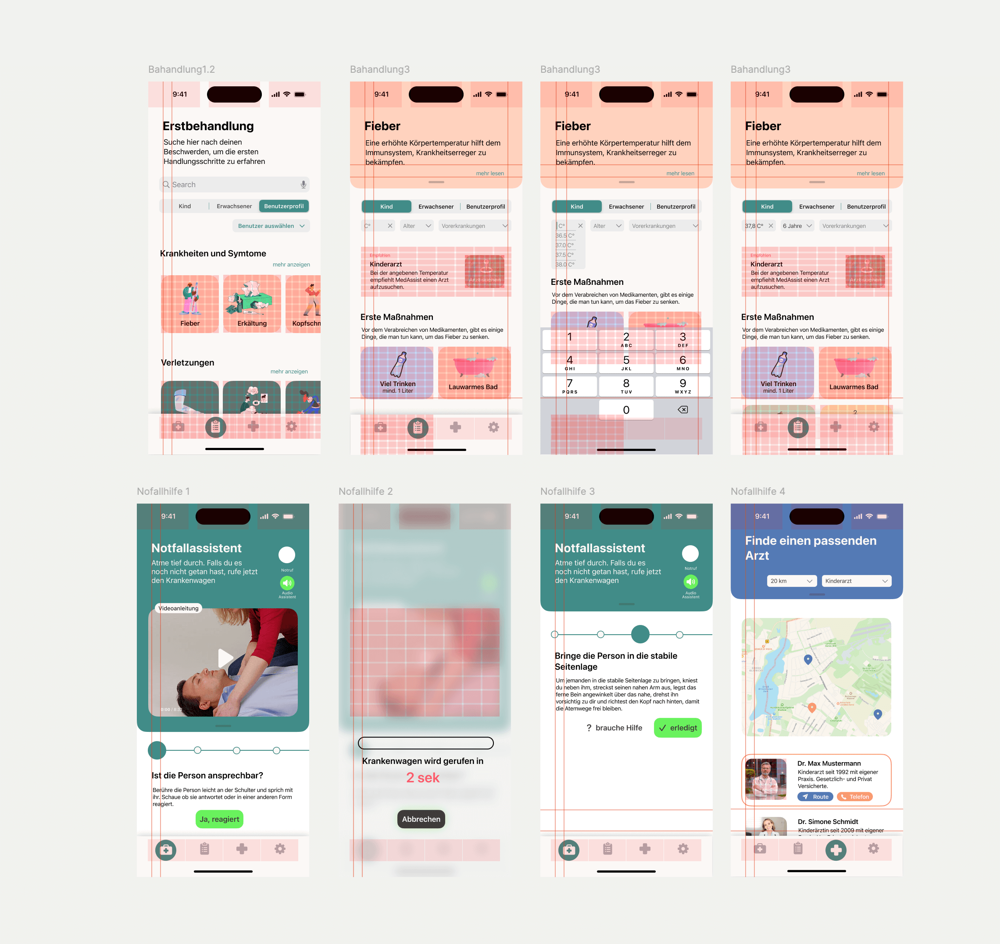
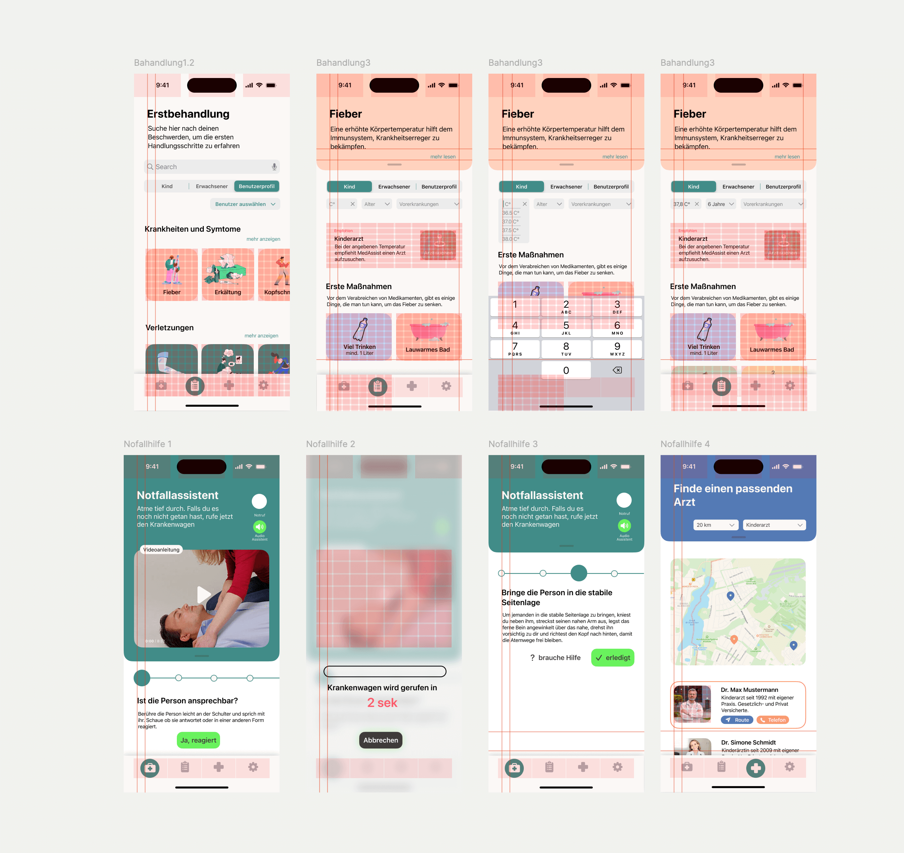

Wireframing
Für mich beginnt jedes Designprojekt mit dem Wireframing – der Moment, in dem Ideen erste Formen annehmen. Meist auf PApier skizziere ich grob ganze Screens oder fokussiere mich auf einzelne Funktionen, je nachdem, was gerade wichtiger ist. Es geht mir darum, die Grundidee klar herauszuarbeiten und die Funktionen sinnvoll zu sortieren. Die ersten Skizzensind meist so grob, dass nur ich damit etwas anfangen kann, mit der Zeit wird es dann konkreter. Am Ende des Prozesses, will ich einen Überblick über die Struktur haben, um dann mit dem nächsten SChritt weitermachen zu können.
Erste Umsetzung in Figma
Als Nächstes übertrage ich die Skizzen nach Figma. Anfangs halte ich das Design bewusst schlicht, nutze nur Graustufen und Platzhalter für Texte und Bilder, um nicht von der Funktionalität abzulenken. Es entstehen statische Screens, die die wichtigsten Elemente festhalten. Diese Phase nutze ich auch, um erste Usertests durchzuführen und ein Gefühl dafür zu bekommen, ob die Anordnung und der Flow verständlich sind.
Design System & Visual Design
Jetzt beginnt der Teil, der mir am meisten Spaß macht: das Visual Design. Hier lege ich die visuelle Identität des Projekts fest. Farben, Typografie und Icons bekommen ihren Charakter, und ich achte darauf, dass alles stimmig ist. Auch Details wie Microinteractions und Hover-States gestalte ich hier, um dem Design Leben einzuhauchen. Für mich ist das der Schritt, in dem ein Projekt wirklich greifbar wird.
Prototyping
Zum Schluss verbinde ich die Screens zu einem interaktiven Prototypen. Dabei geht es mir darum, ein realistisches Nutzererlebnis zu simulieren. Ich teste, ob alle Aktionen intuitiv erkennbar sind und der Flow logisch aufgebaut ist. Abschließende Usertests geben mir wertvolles Feedback, bevor das Design finalisiert wird.

 
